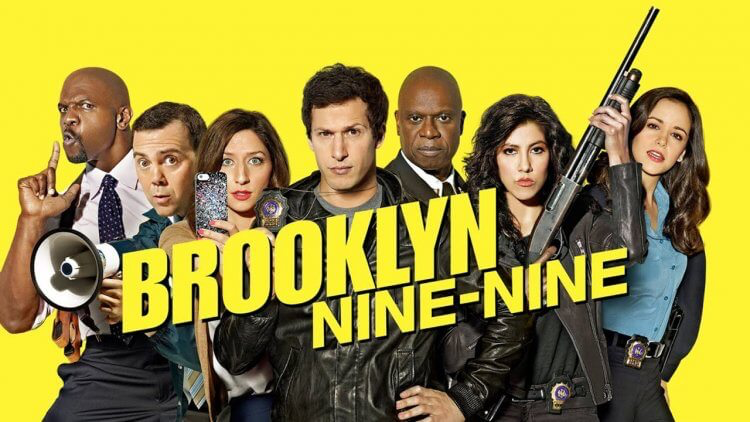
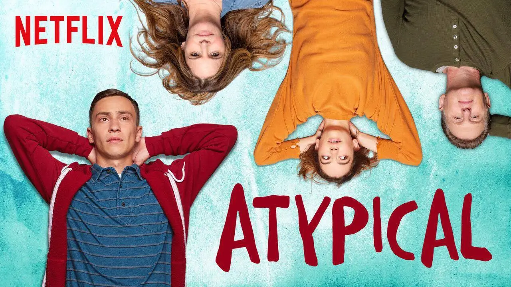
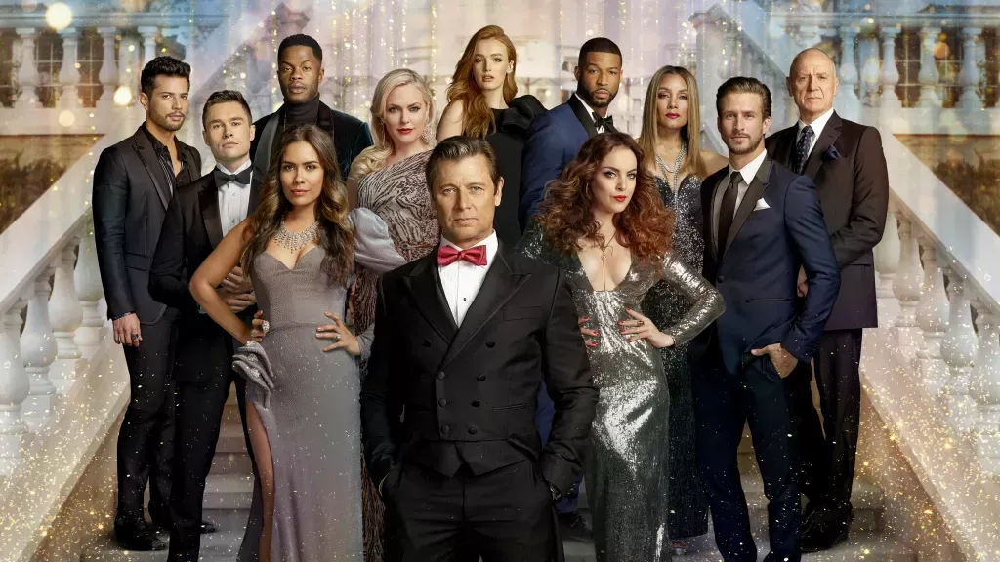
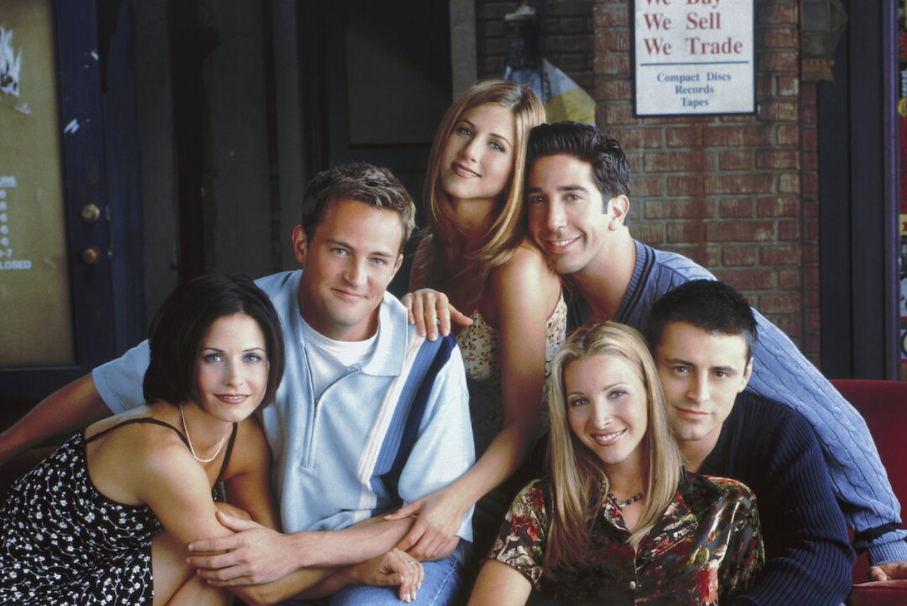

Hello, Welcome to my movie theater!
一、荒唐分局 Brooklyn Nine-Nine
喜劇節目
2013年播出，共8季
評價 ⭐⭐⭐⭐⭐
what - 闡述分局99裡所發生的工作趣事
who - 適合即將搬去美國的外國人，嘗試想了解美式幽默以及文化
when - 每一集都有一個新主題，每次可以以一個集數為單位觀看，適合吃飯、舒壓時觀看
why - 局裡每個角色鮮明，友情化學反應產生許多荒謬事蹟，許多笑點值得一在回味，適合重複觀看學

二、異類 Atypical
幽默感人劇作、青少年節目
2017年播出，共4季
評價 ⭐⭐⭐⭐⭐
what - 以主角山姆及家庭為故事中心，18歲自閉症男孩面對青春期，跨越障礙進入大學生活
who - 適合正值青春期面臨多方壓力的高中、大學生，也適合面對18-24歲孩子所困擾的父母
when - 劇情連貫，但對話直白可放鬆心情看，適合睡前小追1-2集
why - 從中了解美式教育，在面對困境時山姆克服的方式耳目一新，很值得在角色對話中細細品味

三、朝代 Dynasty
社會議題節目、幽默肥皂劇劇作
2016年播出，共5季
評價 ⭐⭐⭐⭐⭐
what - 講述Carrington家族豪門恩怨，包含種族、性別及家族間的複雜關係，是改編自1980年代黃金時段肥皂劇
who - 類似台灣狗血劇，可以暫時抽離現實，非常適合在人生低谷時觀看
when - 許多談判場景，各種議題用詞出現在對話中，適合做為話題與朋友一起觀看
why - 女主角 法倫Fallon 所展現的強勢作為耳目一新，家庭鬥爭又互助的場景百看不厭，很直白闡述人心善與惡的一面

四、六人行 Friends
喜劇節目
1994年播出，共10季
評價 ⭐⭐⭐⭐⭐
what - 六位好友在紐約曼哈頓的生活，劇情圍繞六人面對各自的人生，相互依靠鼓勵成為更獨立的人！
who - 貼近真實人生、對化解白易懂，適合所有人觀看，從中也可以學習很多美式日常用語
when - 以集為一個單位闡述故事，適合吃飯、舒壓時觀看
why - 以幽默的方式闡續現實生活難題，六個角色之間的好感情產生出很多笑點
